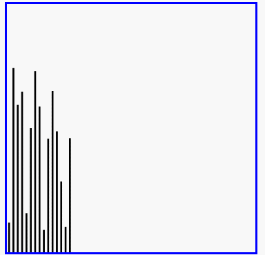

原文连接:https://www.cnblogs.com/rungang/p/11391221.html
一、排序算法
1、冒泡排序（Bubble Sort）
定义：是一种简单的排序算法。它重复地遍历要排序的数列，一次比较两个元素，如果他们的顺序错误就把他们交换过来。遍历数列的工作是重复地进行直到没有再需要交换，也就是说该数列已经排序完成。这个算法的名字由来是因为越小的元素会经由交换慢慢“浮”到数列的顶端。
原理：
- 比较相邻的元素。如果第一个比第二个大（升序），就交换他们两个。
- 对每一对相邻元素作同样的工作，从开始第一对到结尾的最后一对。这步做完后，最后的元素会是最大的数。
- 针对所有的元素重复以上的步骤，除了最后一个。
- 持续每次对越来越少的元素重复上面的步骤，直到没有任何一对数字需要比较。
list1 = [12, 54, 23, 56, 67, 45, 1]
def bubbleSort():
'''冒泡排序'''
for i in range(len(list1) - 1, 0, -1):
for j in range(i):
if list1[j] > list1[j + 1]:
list1[j], list1[j + 1] = list1[j + 1], list1[j]
print(list1)
bubbleSort()时间复杂度：
- 最优时间复杂度：O(n) （表示遍历一次发现没有任何可以交换的元素，排序结束。）
- 最坏时间复杂度：O(n2)
- 稳定性：稳定
效果图：

2、选择排序
定义：选择排序（Selection sort）是一种简单直观的排序算法。它的工作原理如下。首先在未排序序列中找到最小（大）元素，存放到排序序列的起始位置，然后，再从剩余未排序元素中继续寻找最小（大）元素，然后放到已排序序列的末尾。以此类推，直到所有元素均排序完毕。
list1 = [2, 6, 9, 5, 3, 1]
def selection_sort(list1):
n = len(list1)
# 需要进行n-1次选择操作
for i in range(n - 1):
# 记录最小位置
min_pos = i
# 从i+1位置到末尾选择出最小数据
for j in range(i + 1, n):
if list1[j] < list1[min_pos]:
min_pos = j
# 如果选择出的数据不在正确位置，进行交换
if min_pos != i:
list1[i], list1[min_pos] = list1[min_pos], list1[i]
print('----》', list1)
selection_sort(list1)时间复杂度：
- 最优时间复杂度：O(n2)
- 最坏时间复杂度：O(n2)
- 稳定性：不稳定（考虑升序每次选择最大的情况）
效果图：

3、插入排序
定义：插入排序（英语：Insertion Sort）是一种简单直观的排序算法。它的工作原理是通过构建有序序列，对于未排序数据，在已排序序列中从后向前扫描，找到相应位置并插入。插入排序在实现上，在从后向前扫描过程中，需要反复把已排序元素逐步向后挪位，为最新元素提供插入空间。
list1 = [3, 2, 9, 5, 1, 0]
def insert_sort(list1):
'''插入排序'''
# 从第二个位置，即下标为1的元素开始向前插入
for i in range(1, len(list1)):
# 从第i个元素开始向前比较，如果小于前一个元素，交换位置
for j in range(i, 0, -1):
if list1[j] < list1[j - 1]:
list1[j], list1[j - 1] = list1[j - 1], list1[j]
print(list1)
insert_sort(list1)时间复杂度：
- 最优时间复杂度：O(n) （升序排列，序列已经处于升序状态）
- 最坏时间复杂度：O(n2)
- 稳定性：稳定
效果图：

4、快速排序
定义：快速排序（英语：Quicksort），又称划分交换排序（partition-exchange sort），通过一趟排序将要排序的数据分割成独立的两部分，其中一部分的所有数据都比另外一部分的所有数据都要小，然后再按此方法对这两部分数据分别进行快速排序，整个排序过程可以递归进行，以此达到整个数据变成有序序列。
步骤为：
- 从数列中挑出一个元素，称为"基准"（pivot），
- 重新排序数列，所有元素比基准值小的摆放在基准前面，所有元素比基准值大的摆在基准的后面（相同的数可以到任一边）。在这个分区结束之后，该基准就处于数列的中间位置。这个称为分区（partition）操作。
- 递归地（recursive）把小于基准值元素的子数列和大于基准值元素的子数列排序。
递归的最底部情形，是数列的大小是零或一，也就是永远都已经被排序好了。虽然一直递归下去，但是这个算法总会结束，因为在每次的迭代（iteration）中，它至少会把一个元素摆到它最后的位置去。
list1 = [89, 56, 34, 16, 98, 110, 78, 90]
def quik_sort(list1, start, end):
'''快速排序'''
# 递归退出的条件
if start >= end:
return
# 设定起始元素要寻找位置的基准标准
mid = list1[start]
# low为序列左边的由左向右移动的游标
low = start
# high为序列左边的由右向左移动的游标
high = end
while low < high:
# 若low与high未重合high指向的元素不比基准元素小，则high向左移动
while low < high and list1[high] >= mid:
high -= 1
list1[low] = list1[high]
# 若low与high未重合low指向的元素不比基准元素小，则low向左移动
while low < high and list1[low] < mid:
low += 1
list1[high] = list1[low]
# 退出循环后，low与high重合，此时所指位置为基准元素的正确位置
# 将基准元素放到该位置
list1[low] = mid
# 左边序列快速排序 递归
quik_sort(list1, start, low - 1)
# 右边序列快速排序
quik_sort(list1, low + 1, end)
print(list1)
quik_sort(list1, 0, len(list1) - 1)时间复杂读：
- 最优时间复杂度：O(nlogn)
- 最坏时间复杂度：O(n2)
- 稳定性：不稳定
演示：

5、希尔排序
定义：希尔排序(Shell Sort)是插入排序的一种。也称缩小增量排序，是直接插入排序算法的一种更高效的改进版本。希尔排序是非稳定排序算法。该方法因DL．Shell于1959年提出而得名。 希尔排序是把记录按下标的一定增量分组，对每组使用直接插入排序算法排序；随着增量逐渐减少，每组包含的关键词越来越多，当增量减至1时，整个文件恰被分成一组，算法便终止。
基本思想：将数组列在一个表中并对列分别进行插入排序，重复这过程，不过每次用更长的列（步长更长了，列数更少了）来进行。最后整个表就只有一列了。将数组转换至表是为了更好地理解这算法，算法本身还是使用数组进行排序。
list1 = [23, 17, 77, 54, 12, 43, 65, 45]
def shell_sort(list1):
'''插入排序'''
n = len(list1)
# 初始化步长
gap = n // 2
while gap > 0:
# 按步长进行插入排序
for i in range(gap, n):
j = i
while j >= gap and list1[j - gap] > list1[j]:
list1[j - gap], list1[j] = list1[j], list1[j - gap]
j -= gap
gap = gap // 2
print(list1)
shell_sort(list1)
时间复杂度：
- 最优时间复杂度：根据步长序列的不同而不同
- 最坏时间复杂度：O(n2)
- 稳定想：不稳定
演示：

6、归并排序
定义：归并排序是采用分治法的一个非常典型的应用。归并排序的思想就是先递归分解数组，再合并数组。
将数组分解最小之后，然后合并两个有序数组，基本思路是比较两个数组的最前面的数，谁小就先取谁，取了后相应的指针就往后移一位。然后再比较，直至一个数组为空，最后把另一个数组的剩余部分复制过来即可。
原理：
def merge_sort(list1):
'''归并排序'''
if len(list1) <= 1:
return list1
# 二分分解
num = len(list1) // 2
left = merge_sort(list1[:num])
right = merge_sort(list1[num:])
print(left)
print(right)
# 进行合并
return merge(left, right)
def merge(left, right):
'''合并操作，将两个有序数组left[] right[]合并成一个大的有序数组'''
# left与right定义下标
l, r = 0, 0
result = []
while l < len(left) and r < len(right):
if left[l] < right[r]:
result.append(left[l])
l += 1
else:
result.append(right[r])
r += 1
result += left[l:]
result += right[r:]
return result
list1 = [12, 34, 21, 56, 43, 67]
a = merge_sort(list1)
print(a)
时间复杂度：
- 最优时间复杂度：O(nlogn)
- 最坏时间复杂度：O(nlogn)
- 稳定性：稳定
6种排序算法比较：